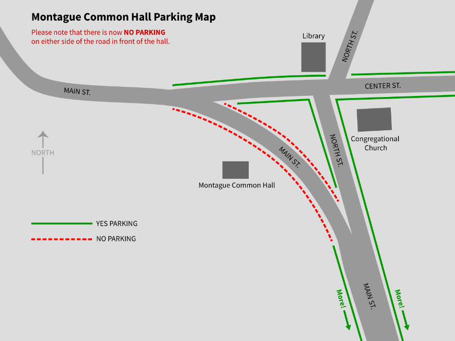

Hall Improvements, Spring Clean Up, and May Day!
Posted Fri, May 3, 2024; updated Tue, May 28, 2024
Hello- it’s been a while!
We are emerging from our hibernal coziness, and excited to let you know what’s new and delightful at the hall.
Thanks to a generous donation from the Community Foundation of Western Massachusetts and significant rebates through Mass Save, we are about to begin the process of upgrading our ancient heating system by installing a set of mini-split heat pumps. This will move us away from fossil fuels, increase our energy efficiency, provide air-conditioning for our hottest months, and dehumidify our perpetually moist basement. Grants and incentives will only cover about half the cost, so we need our community to pitch in too!
Our newest Board member Clay Larsen has proposed a beautiful redesign of the front yard which improves access to the hall and creates an outside space for performance and other gatherings, all while preserving the character of the entry. We have two anonymous matching gifts for $2,500 each. Please add your 2 cents (or 2K!) and help us get to our goal by the end of the year!
Big Thanks to the Montague DPW who just back-filled and grass-seeded our tree line (which had become a muddy ditch). In an attempt to keep it green, and take pressure off of the roots of our beautiful old oak trees, and to improve safety on the narrow curve, there is now No Parking in front of the hall. There is still plenty of parking on the other side of the town common, on Center Street, and just south of the hall. Here’s where you CAN park:

Friday May 3, 2024 7pm
Montague Square Dance
Suggested donation $7-$20, Kids dance free! Masks recommended.
Sunday, May 5th
Montague May Day! 10am-1pm
The Montague Common Hall will have a tent with MCH T-shirts and baked goods for sale, and lots of ways for you to get involved with the Hall, including but not limited to supporting our big push to fund a new heating/cooling/dehumidifying system, and landscaped ramp.
People start gathering at the Post Office around 10 for the procession to the Town Common for our traditional prance around the May Pole, amidst singing, fiddling, Morris Dancing and other cavorting.
Saturday May 11
2nd Saturday Open Mic Night 6:30-9:30pm
(sign-up 6:15p) Donations welcome.
Opening with Sisters of the Circle, a trio that brings together singer-songwriters Sarah Pirtle, Christy Grecsek, and Hana Zara.
Friday May 17
Montague Swing Dance 7pm
With the Butterfly Swing Band
$20 lesson and dance, $15 entry for dance only.
Saturday June 1, 2024 – 10am-1pm
Spring Deep Clean of the MCH and grounds
Please come! It’s a great way to meet neighbors you haven’t met, and to hang out with the ones you know and love!
Outside, we will have gardening play, tidying the back, planting flowers in the planters. And inside-vacuuming, mopping, organizing the broom closet, getting into all the nooks and crannies that have been neglected since the Fall.
Please feel free to bring any plants you think would be happy and play well with others in our wildchild of a garden. And bring gardening tools, or cleaning supplies. We will provide snacks and hydration!